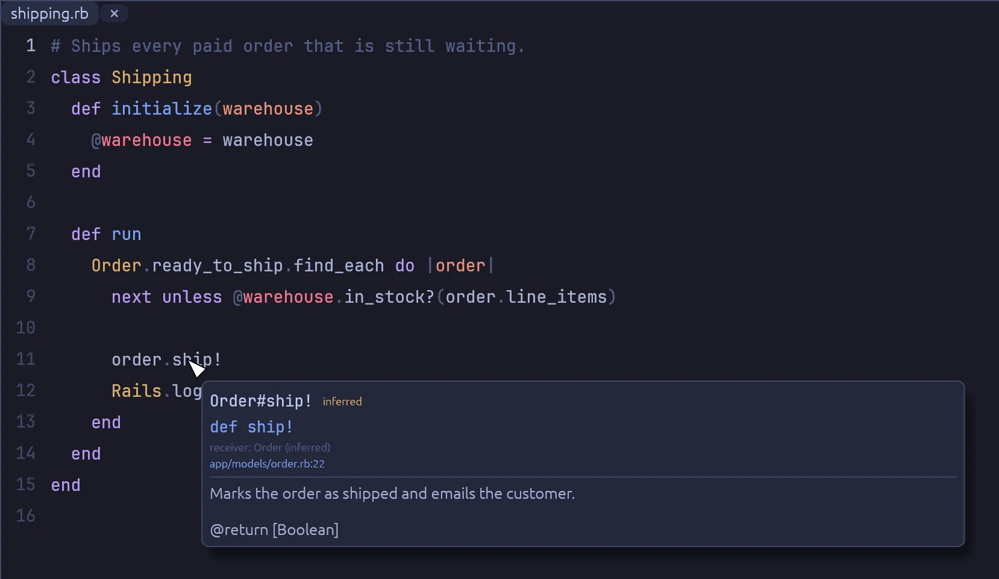
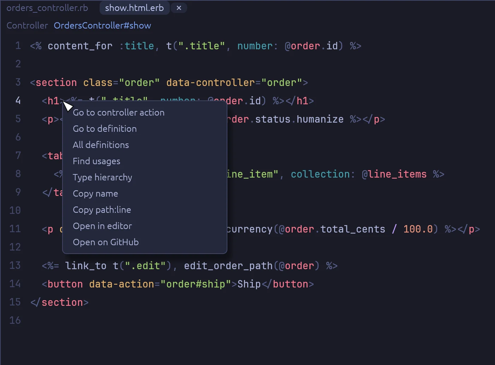
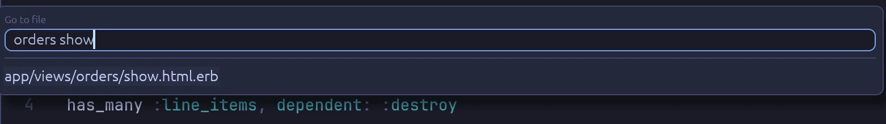

Using Rubyscope
Rubyscope is a desktop app for reading Ruby and Rails code. Hold Ctrl and click a name to go to its definition. This page lists everything you can do with it.
On macOS, use Cmd where this page says Ctrl. Three keys stay on Ctrl: Ctrl Tab, because Cmd+Tab switches apps, and Ctrl D and Ctrl U, as in Vim.
Install
You need Linux or macOS, Rust 1.88 or newer, and clang with libclang. The Prism parser is compiled from C when you build.
Linux
git clone https://github.com/equivalent/rubyscope
cd rubyscope
bin/installThis builds the release binaries and installs rubyscope and rubyscope-cli in ~/.local/bin, an app launcher entry and the icon. Make sure ~/.local/bin is on your PATH.
macOS
bin/install-macosThis installs ~/Applications/rubyscope.app, which you can open from Spotlight or the Dock, and a link to it in ~/.local/bin. An app started from the Dock gets only the system PATH, so Rubyscope reads the PATH of your login shell when it starts.
Optional tools
| Tool | What it gives |
|---|---|
ruby | Gems and the standard library in the index. Rubyscope asks mise or rbenv for the Ruby of the project, else it uses the ruby on PATH. |
bundle install | Clicks that go into gem source. Only installed gems are indexed. |
git | Git blame and "Open on GitHub". |
gh | A click on a blame block opens the pull request of the commit, not only the commit. |
fc-match | Linux: the system monospace font. macOS uses Menlo. |
| Omarchy | Colors from the current Omarchy theme. Without it, the colors are Tokyo Night. |
Open a project
rubyscope ~/code/shop # open a project folder
rubyscope ~/code/shop/app/models/order.rb:40 # open a file at line 40
rubyscope # the current folder, or the start screen- With a file and no folder, the project is the nearest parent folder that has
.gitor aGemfile. - With no arguments, Rubyscope opens the current folder when it has
.gitor aGemfile. Otherwise it shows the start screen, with a path field, a "Browse…" button and your projects. Click a project or press its number to open it, and drag a project to change its number. The "…" button of a project renames it in the list or removes it. - Ctrl O opens the system folder dialog. When a project is already open, the new one opens in a new window.
- Rubyscope remembers the open tabs of each project and opens them again next time.
First steps
- Open a project. The index builds in the background, and the top bar shows "indexing…" and then the number of files. The first index of a large app takes a few seconds. The next start takes about one second.
- Open a file. Press Ctrl P and type part of the path, or click it in the file tree. Press Ctrl T to find a class, module, method or constant by name.
- Hold Ctrl. The names you can click get an underline. Click one to go to its definition. When there are several, Rubyscope shows a list. When a class is opened in many files, it goes to the main file and tells you how many there are.
- Go back with the mouse back button or the back button in the top bar. The forward button goes forward again.
- Right-click a name and choose "Find usages". The results panel opens at the bottom. For a method, the "callers" button on a row shows who calls the method around that row.
- Rest the pointer on a name for half a second. A popup shows the signature, the docs, where it is defined, the type Rubyscope found and how sure it is.
- Press Ctrl B to show git blame. Newer commits get a stronger blue. Click a blame line to open the commit, or its pull request, on GitHub.
- Press Ctrl K to see every command.

order from the code around it.The window
| Part | What it has |
|---|---|
| Top bar | Back and forward, the project name, the file path, the breadcrumb, the "Commands" button, the pull button (a round arrow: git pull for the branch; on conflicts it names the files and fixes nothing), the branch button (a list of branches, newest first, with the initials of the pull request author; a click runs git switch), the "Diff" button and the index status. The breadcrumb shows the class and method at the cursor. Click a part to go there. |
| Side bar | "Files" is the file tree. "Outline" lists the classes, modules, methods and constants of the open file. |
| Tabs | One tab for each open file. Middle-click a tab to close it. Right-click it for more. |
| Action bar | Only in a view file: a link to its controller action or mailer method, for example OrdersController#show. It does not scroll with the code. |
| Code | Drag to select text. Double-click selects a word. Ctrl C copies. |
| Results panel | Usages, search results and the type hierarchy. The type hierarchy shows the ancestors in method lookup order, and the subclasses and includers. |

Mouse
| Mouse | What it does |
|---|---|
| Ctrl + click | Go to the definition, or a list when there are several. |
Ctrl + click a name where it is defined, such as class Order or PREFIX = "x" | List the usages of that class, module or constant. |
| Ctrl + click an action name | Go to its view, a template or a Phlex view. |
| Click the bar above a view | Go to its controller action or mailer method. |
| Rest the pointer on a name | A popup with the signature, docs, location and type. |
| Right-click a name | A menu: go to view or go to controller action, go to definition, all definitions, find usages, type hierarchy, copy name, copy path:line, open in editor, open on GitHub. |
| Right-click a tab or a file | Copy its path or its full path. On a tab, also close it, the tabs to its left or right, or all tabs. |
| Back and forward buttons | Go back and forward. The arrows in the top bar do the same. |
| Click a breadcrumb part | Go to that class or method. |
| Click a blame block | Open the commit, or its pull request, on GitHub. |
| "callers" in the results | Who calls that method, one level up. |
| Middle-click a tab | Close the tab. |

Keys
| Key | What it does |
|---|---|
| Ctrl O | Open a project folder. A new window when a project is open. |
| Ctrl P | Go to file |
| Ctrl T | Go to symbol: a class, module, method or constant |
| Ctrl Shift F | Search in all files of the project. Plain text, case is ignored. |
| Ctrl F | Find in this file. Enter goes to the next match, Shift Enter to the previous one. |
| Ctrl K | All commands |
| Ctrl G | Go to line |
| Ctrl W | Close the tab |
| Ctrl Tab | Next tab |
| Ctrl Shift Tab | Previous tab |
| Ctrl B | Show or hide git blame |
| Ctrl Shift D | Diff mode on or off |
| Ctrl Shift B | Show or hide the side bar |
| Ctrl Q | Close the project and go back to the project list. Press it again to quit. |
| Esc | Close a popup, then the find bar, then the frame of the current change, then the results panel |
Ctrl F and Ctrl Shift F start with the selected text when it is on one line.


Scroll keys
These keys scroll the code when no text field has focus.
| Key | What it does |
|---|---|
| ↑ ↓ or j k | Scroll three lines |
| ← → | Scroll sideways |
| Page Up Page Down | Scroll one page |
| Space or Shift Space | One page down or up |
| Ctrl D or Ctrl U | Half a page down or up |
| gg or Home | Go to the top |
| Shift G or End | Go to the end |
| A number, then g | Go to that line. 500g goes to line 500. |
| 0 | Scroll to the left edge |
| ] [ or Alt ↓ Alt ↑ | Diff mode: the next or previous change |
The mouse wheel scrolls three times faster than usual in egui apps. Hold Shift to scroll a page at a time.
Commands without a key
These are in the Ctrl K list. They have no key, but you can give them one.
| Command | Name in keys.toml |
|---|---|
| Back | back |
| Forward | forward |
| Find usages of the symbol at the cursor | find_usages |
| Go to the view of the action, or the action of the view | go_to_view |
| Type hierarchy of the class at the cursor | type_hierarchy |
| Outline of this file | file_outline |
| Show or hide the results panel | toggle_bottom_panel |
| Open in editor at this line | open_in_editor |
| Open this line on GitHub | open_on_github |
| Copy path:line | copy_path |
| Index the project again, parsing every file | reindex |
| Diff against branch… | diff_against_branch |
| Go to changed file | go_to_changed_file |
"Open in editor" uses omarchy-launch-editor when it is on PATH. Otherwise it opens nvim in a terminal. On macOS it opens nvim in a new Terminal window. "Open on GitHub" needs an origin remote on github.com and opens the line at the commit of HEAD.
Change the keys
Put your keys in ~/.config/rubyscope/keys.toml. A key in this file replaces the default key of that command. The other commands keep their defaults. Rubyscope reads the file when it starts.
toggle_blame = "cmd+alt+b"
next_change = ["n", "alt+down"]
find_usages = "alt+u"
back = "alt+left"
forward = "alt+right"
reindex = "f5"A key is modifiers and one key, joined with +. The modifiers are cmd, ctrl, shift and alt. cmd is Cmd on macOS and Ctrl on Linux, so one file works on both. ctrl is always the Ctrl key. The key can be a letter, a digit, esc, tab, enter, space, an arrow (left, right, up, down), [, ] or f1 to f12. A command can have several keys: give a list, as for next_change above.
| Name | Default |
|---|---|
open_folder | Ctrl O |
go_to_file | Ctrl P |
go_to_symbol | Ctrl T |
search_project | Ctrl Shift F |
find_in_file | Ctrl F |
commands | Ctrl K |
go_to_line | Ctrl G |
close_tab | Ctrl W |
next_tab | Ctrl Tab |
prev_tab | Ctrl Shift Tab |
toggle_blame | Ctrl B |
toggle_sidebar | Ctrl Shift B |
toggle_diff | Ctrl Shift D |
next_change | ], Alt ↓ |
prev_change | [, Alt ↑ |
close_popup | Esc |
next_change and prev_change work only when no text field has focus, so ] and [ can still be typed in the find bar and the pickers.
Diff mode
Press Ctrl Shift D, or click the Diff button at the top right, to see what your branch changed, as in a pull request, and what is not committed yet. The code view is still the file on disk, so Ctrl+click, the hover, find and go to line work as before. The Diff button is blue while diff mode is on.
| Color | What it is |
|---|---|
| Green background, green bar | A line added or changed on the branch (committed) |
| Red row, struck through | A line removed on the branch: a ghost row, with no line number and no links |
| Amber background, amber bar | A line added or changed, not committed |
| Amber row, struck through, dashed bar | A line removed, not committed |
The branch diff starts at the merge-base of the base branch and HEAD, so new commits on the base branch are not shown. The diff bar in the top bar says what is compared, for example Diff: main…feature/order-refunds +77 −3, 3 uncommitted. Click it, or choose "Diff against branch…" in Ctrl K, to pick another base from the local and remote branches. Rubyscope remembers the choice for each project.
] and [ go from change to change. At the last change, ] says so; press it again to open the next changed file. The marks on the right edge show where the changes are; click one to go there. The file tree and the tabs mark changed files (a green A, a blue M, an amber dot for changes that are not committed). In Ctrl P, Tab switches to the changed files, and the "Changes" tab of the side bar lists them with their counts. Blame works in diff mode too: lines that are not committed say so in amber.
The diffs are made again when an open file changes on disk and when HEAD or the base branch moves.
What a click understands
- Constants. Ruby's constant lookup through lexical scopes, ancestors and the top level. Compact names (
class A::B), constant aliases and Zeitwerk folder namespaces. A click on a namespace lists the classes in it. - Methods. Ruby's lookup order: prepends, the class, includes, the superclass. Class methods,
class << self,extend,module_function, concerns (class_methods do,included do),class_eval,ActiveSupport.on_loadandsuper. - Rails DSLs. Associations, scopes, enums,
delegate,class_attributeandmattr_*,attr_*,attribute,store_accessor, attachments,alias_attribute, and columns fromdb/schema.rb. - Symbols that name methods.
before_action :load,validate :check,if: :paid?,send(:x). - Variable types.
Model.find, relations and scopes, associations, block parameters, instance variables, return values, YARD@return, FactoryBotcreate(:x), and as a last guess the variable's name. The hover shows how sure each answer is: exact, inferred, guess or name only. - Phlex. Kit calls such as
Button(...)andUI::Button(...)go toUI::Button, also from a module that a class with the kit includes. - Controllers and views.
OrdersController#editandapp/views/orders/edit.*both ways, variant folders, andViews::Orders::Edit. Mailer methods and their templates the same way. - Routes. Route helpers such as
admin_order_pathgo to the route line. In routes files,resources :xgoes to the controller andto: "a#b"to the action. - Translations.
t("a.b")and lazyt(".x")in controllers, Phlex and templates go to the locale YAML line, for every locale. - Partials.
render "x/y"goes to the partial. In ERB templates, the Ruby inside the tags works like any Ruby. - Tests. RSpec
letandsubject,described_class, shared examples, methods indescribeblocks, FactoryBot factories and traits. - Stimulus.
data-controlleranddata-action, in ERB and in Phlex hashes, go to the controller file and method. - Gems. Gems from
Gemfile.lockand the Ruby standard library.

The saved index
Rubyscope lists the project files and respects .gitignore. It reads Gemfile.lock and asks the project's Ruby where the gems and the standard library are. It parses every Ruby file with Prism on all CPU cores, joins the files into one table, and adds the Rails, RSpec, FactoryBot and Stimulus rules.
The result is saved in ~/.cache/rubyscope/, or in $XDG_CACHE_HOME/rubyscope/. At the next start Rubyscope parses only the files whose size or change time is different. For a large Rails app with its gems, the index is ready in less than a second with the saved index, and in a few seconds without it.
While the window is open, a file watcher sees changes in app/, config/, db/, lib/, spec/, test/, Gemfile and Gemfile.lock. Open tabs load the new text and the index builds again from the changed files.
The saved index is not used after a new build of Rubyscope with new parse rules, or when config/initializers/inflections.rb changed. "Index the project again" in Ctrl K parses every file and writes a new saved index.
Limits
- Methods with names that exist only at runtime, such as
define_methodwith a variable name,method_missingorclass_evalwith a string, cannot be found by reading the code. For these, Rubyscope lists the methods with that name. - Some variable types are guesses. The hover always says when a type is a guess.
- RBS signatures for core classes are not read yet.
"x".stripgives a name-only list, becauseStringis written in C. - Custom Zeitwerk setups are read from the initializers only.
- Files outside the watched folders do not update the index while the window is open. Use "Index the project again".
Files Rubyscope writes
Rubyscope never writes into the project folder.
| Path | What it holds |
|---|---|
~/.cache/rubyscope/ | The saved index of each project |
~/.local/state/rubyscope/recent.json | The projects of the start screen, in your order, with the names you gave them |
~/.local/state/rubyscope/session*.json | The open tabs of each project |
~/.local/state/rubyscope/diff*.json | The base branch of diff mode for each project |
It reads ~/.config/rubyscope/keys.toml for keys and the current Omarchy theme for colors.
Environment variables
| Variable | What it does |
|---|---|
XDG_CACHE_HOME | The folder for the saved index. It must be an absolute path. |
RUBYSCOPE_APP_ID | The app id of the window, which window manager rules match. The default is rubyscope. |
Troubleshooting
| Problem | What to do |
|---|---|
| A click goes to an old line, or a new method is not found | Press Ctrl K and choose "Index the project again". If that does not help, close Rubyscope and delete ~/.cache/rubyscope/. |
| A click on a gem or a Rails method does nothing | Run ruby -v and bundle install in the project folder. Only gems installed for the project's Ruby are indexed. |
| Blame does not show | The project must be a git repository, and git must be on PATH. |
| "This project has no GitHub remote" | The origin remote must be on github.com. |
| A blame click opens the commit, not the pull request | Install the GitHub CLI, gh, and log in. |
| You want to see what the index does | Start Rubyscope from a terminal. It prints a line such as indexed 9000 files in 0.71 s. |
Command-line tool
rubyscope-cli builds the same index as the window and answers questions about it. Use it to test the index or to script a lookup. Positions are FILE:LINE:COL, starting at 1.
rubyscope-cli -r ~/code/shop index # build the index, print counts and times
rubyscope-cli -r ~/code/shop def app/models/order.rb:12:5 # where the name goes
rubyscope-cli -r ~/code/shop refs app/models/order.rb:12:5 # every usage, the first 40
rubyscope-cli -r ~/code/shop hover app/models/order.rb:12:5
rubyscope-cli -r ~/code/shop related app/controllers/orders_controller.rb:8:7
rubyscope-cli -r ~/code/shop outline app/models/order.rb
rubyscope-cli -r ~/code/shop search "ready_to_ship"
rubyscope-cli -r ~/code/shop search --regex "def (create|update)"
rubyscope-cli -r ~/code/shop ancestors ApplicationRecord| Option | What it does |
|---|---|
-r, --root FOLDER | The project folder. The default is the current folder. |
--no-gems | Do not index gems |
--no-stdlib | Do not index the Ruby standard library |
--no-cache | Do not read or write the saved index |
To compare Rubyscope with a booted Rails app, run probe/rails_probe.rb inside the app with bin/rails runner, then rubyscope-cli check on the JSON file it writes. See the README for details.